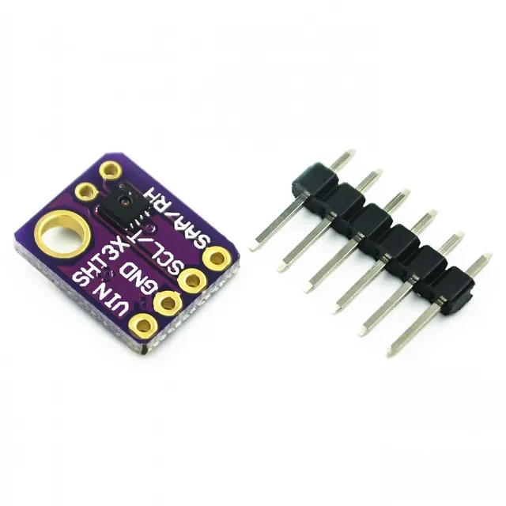

SHT30 Описание:

Датчики температуры/влажности Sensiron — одни из лучших и высокоточных устройств, которые вы можете получить. И, наконец, у нас есть некоторые из них, которые имеют настоящий интерфейс I2C для удобного чтения. Датчик SHT30-D имеет превосходную относительную влажность ±2% и точность ±0,3°C для большинства применений.
В отличие от более ранних датчиков SHT, этот датчик имеет настоящий интерфейс I2C и (бонус!) даже с двумя вариантами адреса. Он также совместим с напряжением 3 В или 5 В, поэтому вы можете питать его и обмениваться данными с ним, используя практически любой микроконтроллер или микрокомпьютер.
Такой замечательный чип, поэтому мы собрали коммутационную плату с SHT30-D и некоторыми вспомогательными схемами, такими как подтягивающие резисторы и конденсаторы. В каждый заказ входит один полностью собранный и протестированный вывод печатной платы и небольшой кусок разъема. Вам нужно будет припаять разъем к печатной плате, но это довольно просто и займет всего несколько минут даже у новичка.
Пины питания:
Vin — это вывод питания. Чип может использовать напряжение 2,5-5 В постоянного тока. Чтобы запитать плату, дайте ей ту же мощность, что и логический уровень вашего микроконтроллера — например, для микроконтроллера с напряжением 5 В, такого как Ard uino, используйте 5 В. Для контроллера 3,3 В, такого как Raspbery Pi, подключитесь к 3,3 В
GND — общей земле для питания и логики.
Логические контакты I2C:
SCL — тактовый контакт I2C, подключите к тактовой линии I2C вашего микроконтроллера.
Этот вывод имеет подтягивающий резистор 10 кОм для
вывода данных Vin SDA - I2C, подключаемого к линии передачи данных I2C вашего микроконтроллера.
Этот вывод имеет подтягивающий резистор 10 кОм к Vin.
Другие выводы:
ADR — это вывод выбора адреса I2C. Этот вывод имеет понижающий резистор 10 кОм, чтобы сделать адрес I2C по умолчанию 0x44. Вы можете привязать этот вывод к Vin, чтобы сделать адрес 0x45
RST — пин-код аппаратного сброса. Имеет подтягивание 10К, чтобы сделать чип активным по умолчанию. Подключитесь к земле, чтобы выполнить аппаратный сброс!
ALR — выход оповещения/прерывания. Вы можете настроить датчик, чтобы он предупреждал вас о возникновении события. Ознакомьтесь с техническим описанием, как настроить оповещения.
Описание SHT31:
Датчики температуры/влажности Sensiron — одни из лучших и высокоточных устройств, которые вы можете получить. И, наконец, у нас есть некоторые из них, которые имеют настоящий интерфейс I2C для удобного чтения. Датчик SHT31-D имеет превосходную относительную влажность ±2% и точность ±0,3°C для большинства применений.
В отличие от более ранних датчиков SHT, этот датчик имеет настоящий интерфейс I2C и (бонус!) даже с двумя вариантами адреса. Он также совместим с напряжением 3 В или 5 В, поэтому вы можете питать его и обмениваться данными с ним, используя практически любой микроконтроллер или микрокомпьютер.
Такой замечательный чип, поэтому мы собрали коммутационную плату с SHT31-D и некоторыми вспомогательными схемами, такими как подтягивающие резисторы и конденсаторы. В каждый заказ входит один полностью собранный и протестированный вывод печатной платы и небольшой кусок разъема. Вам нужно будет припаять разъем к печатной плате, но это довольно просто и займет всего несколько минут даже у новичка.
Пины питания:
Vin — это вывод питания. Чип может использовать напряжение 2,5-5 В постоянного тока. Для питания платы подайте на нее ту же мощность, что и логический уровень вашего микроконтроллера — например, для микроконтроллера 5 В, как для Arduino, используйте 5 В. Для контроллера 3,3 В, такого как Raspbery Pi, подключитесь к 3,3 В
GND — общей земле для питания и логики.
Логические контакты I2C:
SCL — тактовый контакт I2C, подключите к тактовой линии I2C вашего микроконтроллера. Этот вывод имеет подтягивающий резистор 10 кОм для
вывода данных Vin SDA - I2C, подключаемого к линии передачи данных I2C вашего микроконтроллера. Этот вывод имеет подтягивающий резистор 10 кОм к Vin.
Другие выводы:
ADR — это вывод выбора адреса I2C. Этот вывод имеет понижающий резистор 10 кОм, чтобы сделать адрес I2C по умолчанию 0x44. Вы можете привязать этот вывод к Vin, чтобы сделать адрес 0x45.
RST – Пинта аппаратного сброса. Имеет подтягивание 10К, чтобы сделать чип активным по умолчанию. Подключитесь к земле, чтобы выполнить аппаратный сброс!
ALR — выход оповещения/прерывания. Вы можете настроить датчик, чтобы он предупреждал вас о возникновении события. Проверьте таблицу данных, чтобы узнать, как настроить оповещения.